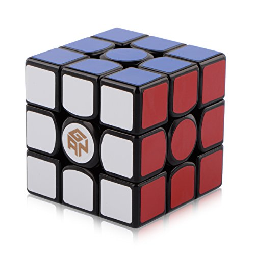

I often solve a Rubik's Cube 3x3x3 and 2x2x2 as a hobby
-3x3x3
Best:11.31 Average:19.01
-2x2x2
Best: 3.22 Average: 8.49
I has started solving cube when i was 16 years old.
Because when I just observed in person to beside.
I really astonished and mysterious his hand ,
So, I decided to start solving cube leisurely.
Next to me, Always There was a friend who fashioned to our school as a pioneer.
followed him, I started.
then, I aimed to solve a Cube completely.
I realized that the more practice, the better ability
So I am frequently solving a cube anytime, anywhere.
And I wanna challenge another cube except for my cube type.
Additionally, I want to Get a more flexible, more smooth Cube.
But it is quite expensive.